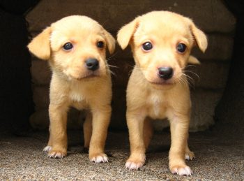
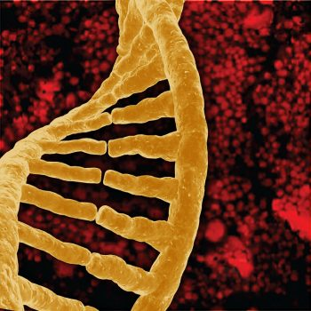
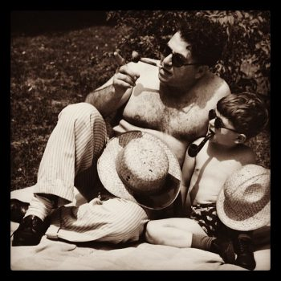

9.3: The Nature-Nurture Question and Behavior Genetics
Nature-Nurture and Twin Studies
People have a deep intuition about what has been called the “nature–nurture question” (Turkheimer, 2023). Some aspects of our behavior feel as though they originate in our genetic makeup, while others feel like the result of our upbringing or our hard work. The scientific field of behavioral genetics attempts to study these differences empirically, either by examining similarities among family members with different degrees of genetic relatedness or, more recently, by studying differences in the DNA of people with different behavioral traits. The scientific methods that have been developed are ingenious but often inconclusive. Many of the difficulties encountered in the empirical science of behavioral genetics turn out to be conceptual, and our intuitions about nature and nurture get more complicated the harder we think about them. In the end, it is an oversimplification to ask how “genetic” some particular behavior is. Genes and environments always combine to produce behavior, and the real science is in the discovery of how they combine for a given behavior.
It may seem obvious that we are born with certain characteristics while others are acquired, yet in the history of psychology, the “nature–nurture debate” has caused much controversy and offense: We are so concerned with nature–nurture because our very sense of moral character seems to depend on it. While we may admire the athletic skills of a great basketball player, we think of his height as simply a gift, a payoff in the “genetic lottery.” For the same reason, no one blames a short person for his height or someone’s congenital disability on poor decisions. To state the obvious, it’s “not their fault.” But we do praise the concert violinist (and perhaps her parents and teachers as well) for her dedication, just as we condemn cheaters, slackers, and bullies for their bad behavior.
The problem is that most human characteristics aren’t usually as clear-cut as height or instrument mastery, affirming our nature–nurture expectations strongly one way or the other. In fact, even the great violinist might have some inborn qualities—pitch perception talent or long, nimble fingers—that support and reward her hard work. And the basketball player might have eaten a diet while growing up that promoted his genetic tendency to be tall. When we think about our own qualities, they seem under our control in some respects yet beyond our control in others. Often, the traits that don’t seem to have an obvious cause are the ones that concern us the most and are far more personally significant. What about how much we drink or worry? What about our honesty, or religiosity, or sexual orientation? They all come from that uncertain zone, neither fixed by nature nor totally under our control.

One major problem with answering nature-nurture questions about people is how to set up an experiment. In nonhuman animals, relatively straightforward experiments can tackle nature–nurture questions. Say, for example, you are interested in aggressiveness in dogs. You want to test for the more important determinant of aggression: being born to aggressive dogs or being raised by them. You could mate two aggressive dogs—angry Chihuahuas—together, and mate two nonaggressive dogs—happy beagles—together, then switch half the puppies from each litter between the different sets of parents to raise. You would then have puppies born to aggressive parents (the Chihuahuas) but raised by nonaggressive parents (the Beagles), and vice versa. The big questions are: Would the Chihuahua parents raise aggressive beagle puppies? Would the beagle parents raise nonaggressive Chihuahua puppies? Would the puppies’ nature win out, regardless of who raised them? Or… would the result be a combination of nature and nurture? Much of the most significant nature–nurture research has been done in this way (Scott & Fuller, 1998), and animal breeders have been doing it successfully for thousands of years. In fact, it is fairly easy to breed animals for behavioral traits.
With people, however, we can’t assign babies to parents at random, or select parents with certain behavioral characteristics to mate, merely in the interest of science (though history does include horrific examples of such practices in misguided attempts at “eugenics,” the shaping of human characteristics through intentional breeding). In typical human families, children’s biological parents raise them, so it is difficult to know whether children act like their parents due to genetic (nature) or environmental (nurture) reasons. Nevertheless, despite our restrictions on setting up human-based experiments, we see real-world examples of nature-nurture at work in the human sphere—though they only provide partial answers to our many questions.
The science of how genes and environments work together to influence behavior is called behavioral genetics. The easiest opportunity we have to observe this is the adoption study. When children are put up for adoption, the parents who give birth to them are no longer the parents who raise them. This setup isn’t quite the same as the experiments with dogs (children aren’t assigned to random adoptive parents to suit the particular interests of a scientist), but adoption still tells us some interesting things. For instance, if the biological child of tall parents were adopted into a family of short people, do you suppose the child’s growth would be affected? What about the biological child of a Spanish-speaking family adopted at birth into an English-speaking family? What language would you expect the child to speak? And what might these outcomes tell you about the difference between height and language in terms of nature-nurture?
Another option for observing nature-nurture in humans involves twin studies. There are two types of twins: monozygotic (MZ) and dizygotic (DZ). Monozygotic twins, also called “identical” twins, result from a single zygote (fertilized egg) and have the same DNA. They are essentially clones. Dizygotic twins, also known as “fraternal” twins, develop from two zygotes and share 50% of their DNA. Fraternal twins are ordinary siblings who happen to have been born at the same time. To analyze nature–nurture using twins, we compare the similarity of MZ and DZ pairs. Sticking with the features of height and spoken language, let’s look at how nature and nurture apply: Identical twins, unsurprisingly, are almost perfectly similar in height. The heights of fraternal twins, however, are like any other sibling pairs: more similar to each other than to people from other families, but hardly identical. This contrast between twin types gives us a clue about the role genetics plays in determining height. Now consider spoken language. If one identical twin speaks Spanish at home, the co-twin with whom she is raised almost certainly does too. But the same would be true for a pair of fraternal twins raised together. In terms of spoken language, fraternal twins are just as similar as identical twins, so it appears that the genetic match of identical twins doesn’t make much difference.
Twin and adoption studies are two instances of a much broader class of methods for observing nature-nurture called quantitative genetics, the scientific discipline in which similarities among individuals are analyzed based on how biologically related they are. We can do these studies with siblings and half-siblings, cousins, and twins who have been separated at birth and raised separately (Bouchard et al., 1990; such twins are very rare and play a small role in the science of nature–nurture), or with entire extended families (see Plomin et al., 2012, for a complete introduction to research methods relevant to nature–nurture).
For better or for worse, contentions about nature–nurture have intensified because quantitative genetics produces a number called a heritability coefficient, varying from 0 to 1, that is meant to provide a single measure of genetics’ influence on a trait. In a general way, a heritability coefficient measures how strongly differences among individuals are related to differences in their genes. But beware. Heritability coefficients, although simple to compute, are deceptively difficult to interpret. Nevertheless, numbers that provide simple answers to complicated questions tend to have a strong influence on the human imagination, and a great deal of time has been spent discussing whether the heritability of intelligence or personality or depression is equal to one number or another.

One reason nature–nurture continues to fascinate us is that we live in an era of great scientific discovery in genetics. DNA was discovered by Watson and Crick in the 1950s; the human genome—about 3 billion base pairs long—was completely sequenced at the turn of the 21st century, and we are now on the verge of being able to obtain the specific DNA sequence of anyone at a relatively low cost (the cost of sequencing a human genome has fallen from around $10 million in 2007 to below $500 today; Collins, 2024; National Human Genome Research Institute, 2021). Every day, it seems, new discoveries are made, and new possibilities are proposed. No one knows what this new genetic knowledge will mean for the study of nature–nurture, but as we will see in the next section, answers to nature–nurture questions have turned out to be far more difficult and mysterious than anyone imagined.
What Have We Learned About Nature–Nurture?
It would be satisfying to be able to say that nature–nurture studies have given us conclusive and complete evidence about where traits come from, with some traits clearly resulting from genetics and others almost entirely from environmental factors such as childrearing practices and personal will, but that is not the case. Instead, everything has turned out to have some footing in genetics. The more genetically related people are, the more similar they are—for everything: height, weight, intelligence, personality, mental illness, etc. Sure, it seems like common sense that some traits have a genetic bias. For example, adopted children resemble their biological parents even if they have never met them, and identical twins are more similar to each other than are fraternal twins. However, while certain psychological traits, such as personality or mental illness (e.g., schizophrenia), seem reasonably influenced by genetics, it turns out that the same is true for political attitudes, how much television people watch (Plomin et al., 1990), and whether or not they get divorced (McGue & Lykken, 1992). The message is clear: You can’t leave genes out of the equation. But keep in mind, no behavioral traits are completely inherited, so you can’t leave the environment out altogether, either.

Trying to untangle nature-nurture influences on human behavior can be messy, and common-sense notions can get in the way of good science. Behavioral genetics has taught us a crucial lesson: with biologically related subjects, we can’t assume behavior stems solely from nurture, even when environmental influence seems clear. For example, data showing better reading scores in children whose mothers read to them frequently might suggest that parental reading is key to academic success. But the study as described is inconclusive because both genetic and environmental factors could affect the parenting practices and the abilities of their children.
An issue with the heritability coefficient is that it divides traits’ determinants into two portions—genes and environment—which are then calculated together for the total variability. This is a little like asking how much of the experience of a symphony comes from the horns and how much from the strings; the ways instruments or genes integrate is more complex than that.
The heritability coefficient does not capture the complexity of the nature-nurture relationship. Genetics affect traits under some environmental circumstances but not others—a phenomenon called gene-environment interaction, or G x E. In one well-known example, Caspi et al. (2002) found that among maltreated children, those who carried a particular allele of the MAOA gene showed a predisposition to violence and antisocial behavior, while those with other alleles did not. However, in children who had not been maltreated, the gene had no effect. In another example of gene-environment interaction, adoptees whose biological mothers had schizophrenia and who had been raised in a disturbed family environment were much more likely to develop schizophrenia than were any of the other groups in the study (Tienari et al., 2004):
- Of adoptees whose biological mothers had schizophrenia (high genetic risk) and who were raised in disturbed family environments, 36.8% were likely to develop schizophrenia.
- Of adoptees whose biological mothers had schizophrenia (high genetic risk) and who were raised in healthy family environments, 5.8% were likely to develop schizophrenia.
- Of adoptees with a low genetic risk (whose mothers did not have schizophrenia) and who were raised in disturbed family environments, 5.3% were likely to develop schizophrenia.
- Of adoptees with a low genetic risk (whose mothers did not have schizophrenia) and who were raised in healthy family environments, 4.8% were likely to develop schizophrenia.
The study shows that adoptees with high genetic risk were most likely to develop schizophrenia if they were raised in disturbed home environments. This research suggests genetic vulnerability and environmental stress both contribute to developing schizophrenia and that genes (or environment) alone do not tell the full tale (Spielman et al., 2020). Making matters even more complicated are recent studies of what is known as epigenetics (covered in the next section), a process in which genes can be turned “on” or “off” in response to environmental events, and those epigenetic changes transmitted to children.
Nature-nurture questions often focus on trait malleability and whether we “have a choice” about it. These are complex issues, as illustrated by phenylketonuria—a genetic disorder caused by a single gene that could result in intellectual disability and death, but is manageable through diet, and height—firmly rooted genetics, but affected by environmental factors as shown by the height increases in some Asian and European populations over the last 100 years due to changes in diet and reduced poverty.
With the Human Genome Project and DNA sequencing, it was believed that we would easily be able to link specific genes with specific behaviors. That has not happened. A few rare genes have been found to have significant effects, such as the single genes that cause Huntington’s disease or early-onset dementia in some Alzheimer’s cases. Most genetic influences on behavior are distributed across many genes, each with tiny effects, making them difficult to catalog. Similarly, environmental effects are typically hard to pinpoint. Extreme environmental hardship is catastrophic for behavioral outcomes, but fortunately, such extreme cases are very rare. Within the normal range of environments, events responsible for differences (e.g., why some children in a suburban third-grade classroom perform better than others) are much more difficult to pinpoint.
Nature-nurture problems resist simple solutions. With nature-nurture, what seems straightforward and possible to index with a single number becomes more complicated the closer we look. Questions about gene-environment interactions in human traits (e.g., sensitivity to environmental change, parental versus cultural influence, genetic variability in a population, whether traits involve single or multiple genes, etc.) may have different answers, with limited implications for the others. We should continue studying nature-nurture relationships without oversimplifying their complexity.
Text Attributions
This section contains material adapted from:
Turkheimer, E. (2023). The nature-nurture question. In R. Biswas-Diener & E. Diener (Eds), Noba textbook series: Psychology. Champaign, IL: DEF publishers. Retrieved from http://noba.to/tvz92edh License: CC BY-NC-SA 4.0 DEED
Spielman, R. M., Jenkins, W. J., & Lovett, M. D. (2020). 3.1 Human Genetics. In Psychology 2e. OpenStax. Access for free at https://openstax.org/books/psychology-2e/pages/3-1-human-genetics License: CC BY 4.0 DEED
Media Attributions
- Puppies © Flickr is licensed under a CC BY-NC (Attribution NonCommercial) license
- Twin babies © Noba is licensed under a CC BY-NC-SA (Attribution NonCommercial ShareAlike) license
- Viral DNA © Flickr is licensed under a Public Domain license
- Like father like son © Flickr is licensed under a Public Domain license
- Mother and son © Flickr is licensed under a Public Domain license

The empirical science of how genes and environments combine to generate behavior.
A behavioral genetic research method that involves the comparison of adopted children to their adoptive and biological parents.
A behavior genetic research method that involves a comparison of the similarity of identical (monozygotic; MZ) and fraternal (dizygotic; DZ) twins.
Scientific and mathematical methods for inferring genetic and environmental processes based on the degree of genetic and environmental similarity among organisms.
An easily misinterpreted statistical construct that purports to measure the role of genetics in the explanation of differences among individuals.